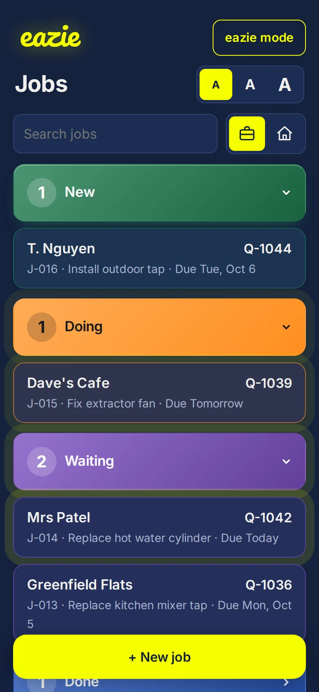
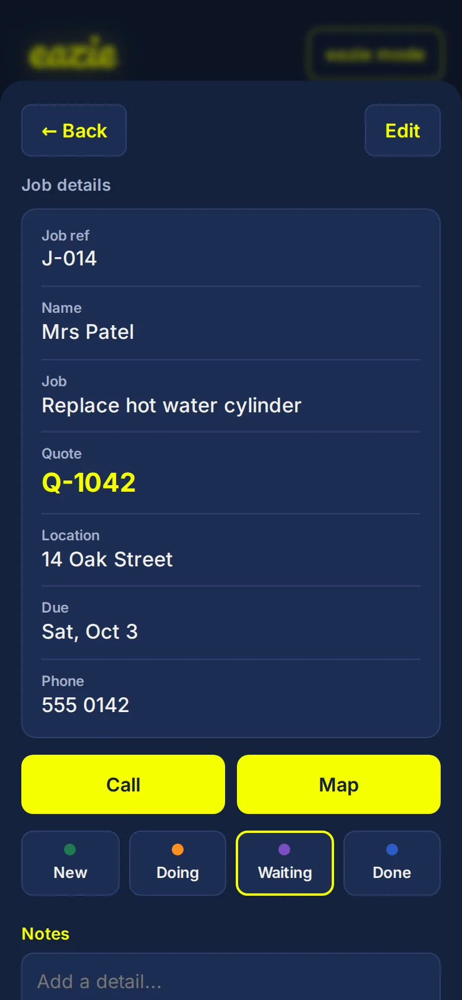
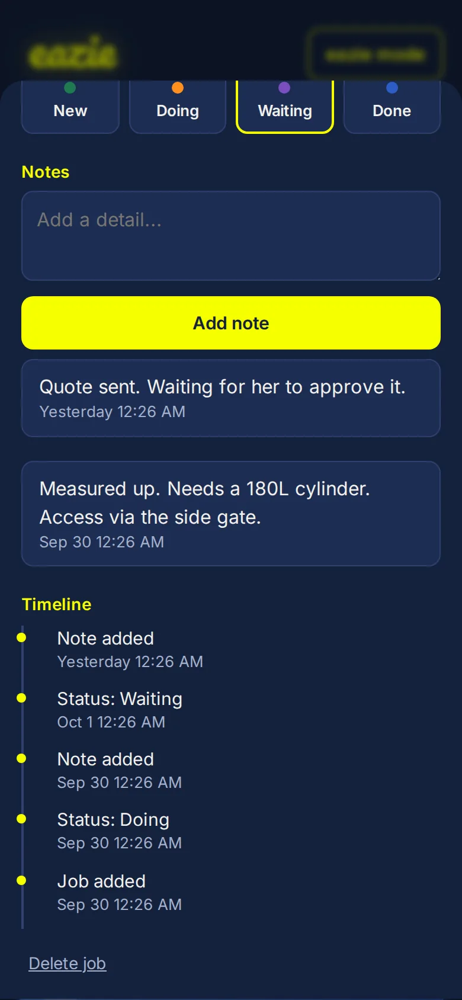
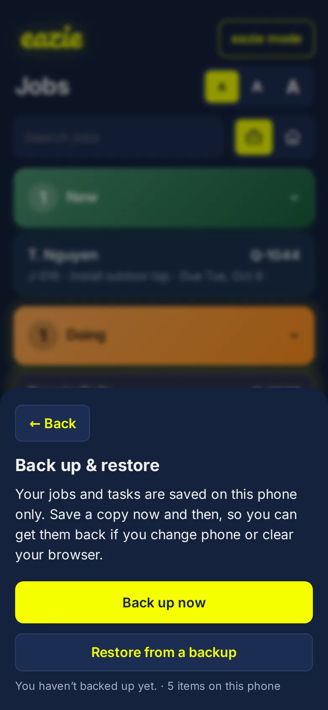

A simple job tracker for one-man-band tradies
Add the job. Move it along. Never lose track of what you are waiting on. eazie is job tracking with everything taken out except what a one-person business actually uses.
Four steps, no training
- New: a job you have been asked to do.
- Doing: you are on it.
- Waiting: you are held up, for example waiting on a quote approval or on materials.
- Done: finished. Done jobs are grouped by week and month, so the list never piles up.

Everything about the job in one place
- Customer name and what the job is.
- Quote number or value.
- Location, due date and time.
- Phone number, with a one-tap Call.
- One-tap Map to open the address.

It remembers everything
Add notes as you go: measurements, access details, what the customer said. Every note and every move between stages is saved with the date and time, so you can always see what happened and when.

Back it up in one tap
Tap Back up & restore at the bottom of the list. eazie saves one small file with all your jobs. Email it to yourself, send it on WhatsApp, or keep it on your phone. New phone? Open eazie, tap Restore, choose the file, and you are back where you left off.

Quick when you are busy
- A title is all it takes to log a job. Add the rest later.
- Job numbers fill in automatically, and you can change them.
- Search by customer, address, quote number or note.
- Anything due today or tomorrow pulses, and anything overdue pulses red.
Deliberately simple
No login. No integrations. No invoicing. No team accounts. It is not connected to your accounting software or your calendar, and that is the point: nothing to set up and nothing to break.
Work and personal in one app
Switch between a briefcase for work and a house for personal tasks. Personal tasks hide the business fields, so the two never get in each other's way.
Common questions
Does it connect to my accounting software or calendar?
No. eazie is not integrated with anything. It is a simple list that keeps track of your jobs.
Do I need an account or a login?
No. There is nothing to sign up for and no password to remember.
Will it work on site with no signal?
Yes. After your first visit it opens offline, and everything is saved on your phone as you go.
Where are my jobs stored?
On your phone, in its browser. There is no cloud sync, so use Back up now and then to save a copy you can restore later.
Can I move my jobs to a new phone?
Yes. Tap Back up on the old phone, send the file to yourself, then open eazie on the new phone and tap Restore.
Does it do quotes or invoices?
No. It holds the quote number or value so you can see it at a glance, but it does not create quotes or invoices.
Can my apprentice or partner use it too?
Yes, but each phone keeps its own list. Jobs are not shared between devices.
Can I attach photos?
Not at the moment. You can add notes to any job.